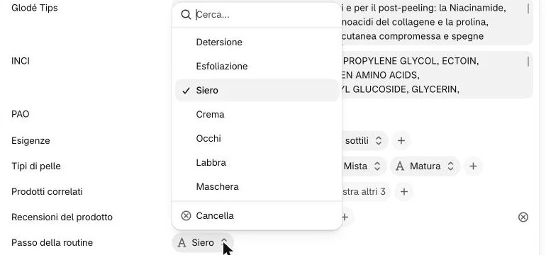
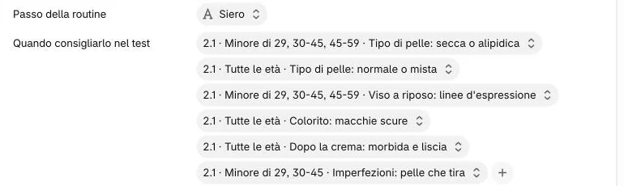
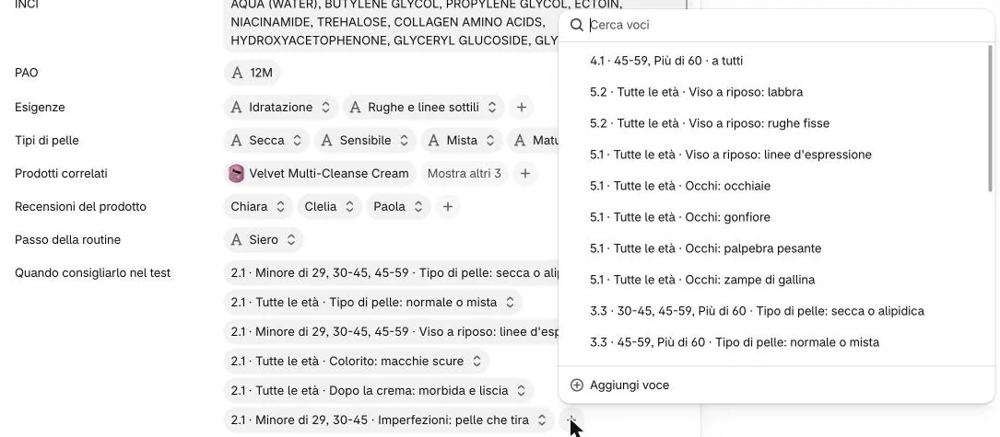
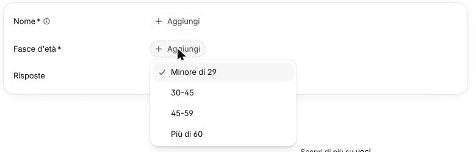

Il test della pelle è la pagina «Scopri il tuo codice». Ogni prodotto dice in quale passo della routine va e in quali casi viene consigliato.
Aprite il prodotto, cliccate il «Passo della routine» e sceglietelo dall’elenco.

Non qui1Quali passi ci sono?
Sette: Detersione · Esfoliazione · Siero · Crema · Occhi · Labbra · Maschera. La spunta indica quello di oggi; «Cancella» in fondo all’elenco lo toglie.
In «Quando consigliarlo nel test» cliccate il + dopo l’ultima voce.

2
Nella finestra che si apre cliccate «Aggiungi voce», in fondo.

Non qui3Perché non scelgo una voce dall’elenco?
Sono le voci degli altri prodotti: il numero all’inizio (per esempio 5.1) dice di quale. Collegarne una al vostro prodotto lo legherebbe a quel prodotto.
Nella pagina «Aggiungi Regola del test» scegliete le «Fasce d’età» e, se servono, le «Risposte».
4

4Come si legge una voce?
Fasce d’età: Minore di 29 · 30-45 · 45-59 · Più di 60. Almeno una.
Nessuna risposta: il prodotto va a tutti in quelle fasce.
Più risposte nella stessa voce: devono esserci tutte.
Più voci sullo stesso prodotto: ne basta una.
Cosa non funziona?
Due risposte alla stessa domanda nella stessa voce (per esempio due «Tipo di pelle») non valgono mai, e il pannello non avvisa: fate due voci.
Restano all’agenzia: il tetto di 2 sieri e 1 crema sotto i 45 anni, le frequenze del peel, le note «Crema giorno/notte».
Scrivete il «Nome» della voce come gli altri e salvate; poi, sul prodotto, cliccate «Salva».
5Come si scrive il nome?
Come quelli di oggi: numero del prodotto, fasce, risposte. Per esempio «2.1 · Tutte le età · Tipo di pelle: normale o mista».
Il nome serve solo a riconoscere la voce: non si aggiorna da solo. Se cambiate fasce o risposte, correggete anche il nome.
Non vedo il pulsante per salvare
Compare solo dopo che avete scritto qualcosa. La ✕ in alto a destra chiude senza salvare.
E per smettere di consigliarlo in un caso?
Nel campo del prodotto cliccate quella voce e scegliete «Cancella» in fondo al menu (toglie solo quella), poi «Salva». Non cliccate un’altra voce dell’elenco: sostituirebbe quella aperta.
Fate il test su glode-lab.it e controllate il risultato.
6
Sul sito
Il prodotto compare nel risultato del test, nel suo passo della routine, a chi risponde come dicono le sue voci.
 6
6